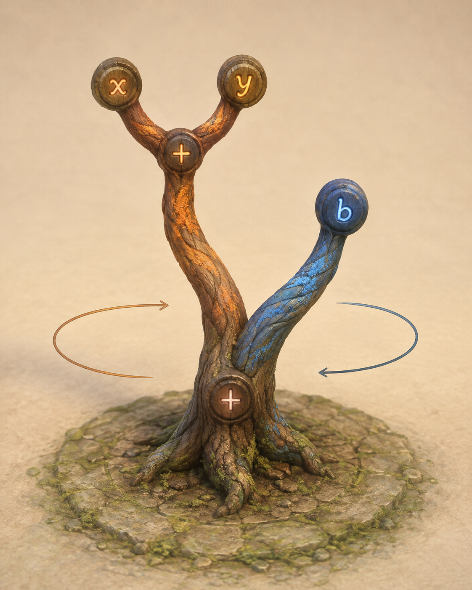

Operators · actions and junctions
Keep the familiar + and × readable first. Carved grooves, raised wood and luminous seams change their material, not their meaning. Unary negation needs its own treatment before we add it to the game.
On the surface, in the air, or inside the wood. Seven mounting studies share the same expression: 5 + (x × 3). Operators, quantities, and variable identities can each have a different material language.
These are SVG material and placement concepts, not new live game sigils. The carved and raised treatments suggest depth; they do not demonstrate real mesh cuts or shadows.
Choose a mounting above independently of the glyph vocabulary. Stable identity matters: a moth means the same variable wherever it occurs, not a different variable on each branch.
Keep the familiar + and × readable first. Carved grooves, raised wood and luminous seams change their material, not their meaning. Unary negation needs its own treatment before we add it to the game.
Dots and tallies make small quantities tangible. Larger values need grouping or positional digits; don't turn 137 into a crowd of 137 objects. Zero and negative values remain explicit.
Letters, invented marks, creature emblems and objects are alternative names. The paired designs represent x and y; these drawings are original symbols, not borrowed runes. Shape carries identity even without color.
For an integrated operator, a promising hybrid is to keep its quiet state carved into the wood, then lift a luminous impression into the hand during manipulation. The moving impression and its attachment point remain visibly related.
Overlay / hovering · strongest camera-facing legibility; needs deliberate depth order and hand clearance.
Carved / inlaid · belongs to the tree; needs a stable surface attachment through remeshing and a readable contact while the joint turns.
Raised / suspended · tangible silhouettes; may collide, swing, or cover nearby branches. A branch-sized glyph is still not the branch itself.
This slider is an attachment concept, not an algebraic operation. It illustrates a possible contact cue; it does not implement the earlier extra-variable proposal.

The study 005 concept already put glowing glyphs into the cut faces of wooden joints. That is the starting reference for the carved and inlaid options here.
Its all-medallion vocabulary made every category similar. This sheet explores separating a junction's operator from an atom's identity and from the quantity written on a literal.
The existing floating scene sigils remain the current playable treatment. These options are candidates for discussion, not approved replacements.
Rule tiles & the Noolbox ↗{kind=link}